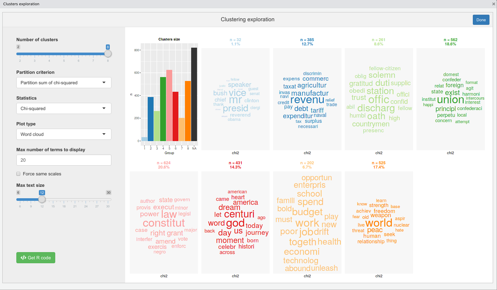

Note : This package is still in development, available only for testing.
The package website can be found at : https://juba.github.io/rainette/.
Rainette is an R package which implements a variant of the Reinert textual clustering method. This method is available in other software such as Iramuteq (free software) or Alceste (commercial, closed source).
Features
- Simple or double clustering algorithms
- Plot functions and shiny gadgets to visualise and explore clustering results
- Utility functions to split a corpus into segments or import a corpus in Iramuteq format
Installation and usage
The package is installable from Github :
Let’s start with an example corpus provided by the excellent quanteda package :
First, we’ll use split_segments to split each text in the corpus into segments of about 40 words (punctuation is taken into account) :
Next, we’ll compute a document-term matrix and apply some treatments with quanteda functions :
dtm <- dfm(corpus, remove = stopwords("en"), tolower = TRUE, remove_punct = TRUE)
dtm <- dfm_wordstem(dtm, language = "english")
dtm <- dfm_trim(dtm, min_termfreq = 3)We can then apply a simple clustering on this dtm with the rainette function. We specify the number of clusters (k), the minimum size for a cluster to be splitted at next step (min_split_members) and the minimum number of forms in each segment (min_uc_size) :
We can use the rainette_explor shiny interface to visualise and explore the different clusterings at each k :

We can then use the generated R code to reproduce the displayed clustering visualisation plot :
rainette_plot(res, dtm, k = 5, type = "bar", n_terms = 20, free_scales = FALSE,
measure = "chi2", show_negative = "TRUE", text_size = 10)Or cut the tree at chosen k and add a group membership variable to our corpus metadata :
docvars(corpus)$group <- cutree_rainette(res, k = 5)In addition to this, you can also perform a double clustering, ie two simple clusterings produced with different min_uc_size which are then “crossed” to generate more solid clusters. To do this, use rainette2 either on two rainette results :
res1 <- rainette(dtm, k = 10, min_uc_size = 10, min_split_members = 10)
res2 <- rainette(dtm, k = 10, min_uc_size = 15, min_split_members = 10)
res <- rainette2(res1, res2, max_k = 10, min_members = 20)Or directly on a dtm with uc_size1 and uc_size2 arguments :
You can then use rainette2_explor, rainette2_plot and cutree_rainette2 to explore and visualise the results.

Credits
This classification method has been created by Max Reinert, and is described in several articles. Here are two references :
- Reinert M, Une méthode de classification descendante hiérarchique : application à l’analyse lexicale par contexte, Cahiers de l’analyse des données, Volume 8, Numéro 2, 1983. http://www.numdam.org/item/?id=CAD_1983__8_2_187_0
- Reinert M., Alceste une méthodologie d’analyse des données textuelles et une application: Aurelia De Gerard De Nerval, Bulletin de Méthodologie Sociologique, Volume 26, Numéro 1, 1990. https://doi.org/10.1177/075910639002600103
Thanks to Pierre Ratineau, the author of Iramuteq, for providing it as free software and open source. Even if the R code has been almost entirely rewritten, it has been a precious resource to understand the algorithms.
Many thanks to Sébastien Rochette for the creation of the hex logo.